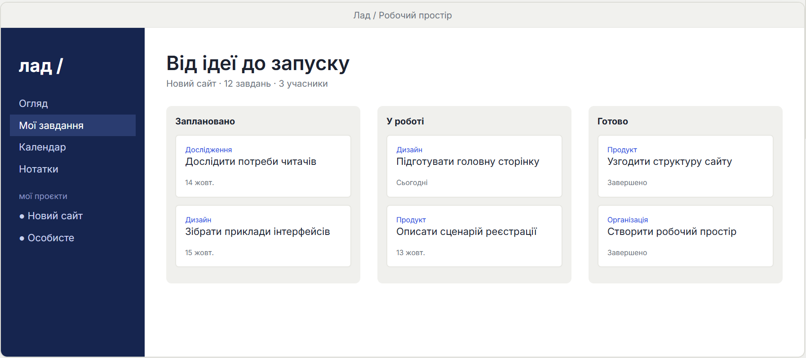

01 / Про продукт
Усі справи — в ладі.
Увага — на головному.
Лад поєднує завдання, календар і нотатки в одному легкому застосунку для комп’ютера. Плануйте день, ведіть проєкти й зберігайте ідеї — без зайвих вкладок і складних налаштувань.

Дошка проєкту ПРИКЛАД 01 / 03
▦Зрозумілий планДошки, пріоритети й терміни допомагають перетворити великий проєкт на конкретні кроки.
▤Ідеї поруч зі справамиПов’язуйте нотатки із завданнями, щоб контекст не губився між різними застосунками.
◈Ваші дані — у васПрацюйте без інтернету. Дані зберігаються локально, а резервні копії контролюєте ви.